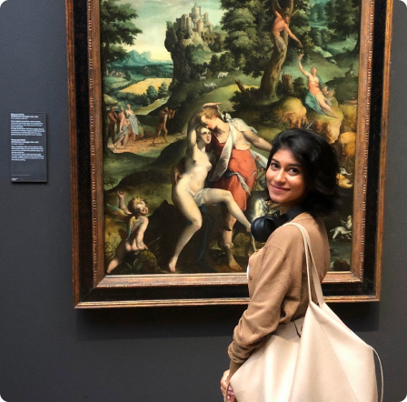
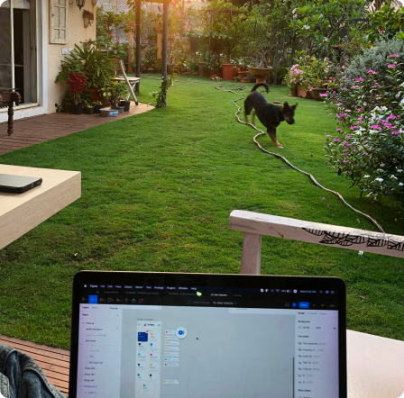

Here are some things you may not know about me!

I love visiting Museums
Here's me at the Rijksmuseum in Amsterdam looking at
the Venus and Adonis painting

I used to work in the Netherlands
Before coming to grad school, I used to work as a product designer
in the Netherlands for 2 years!

I make miniature sculptures!
These are some of the miniatures I've made with clay and
painted with acrylic